Layered Apple Raisin Cake with Maple Cinnamon Frosting
~ raw, vegan, gluten-free ~
I know what you are going to say when you read through the ingredient list… “For the love of almond pulp! What is it with that woman?!” :) It’s true, I do love using almond pulp… it plays so nicely with other ingredients and has a wonderful texture that I haven’t found with other raw foods.
For this cake, and for the taste and texture that I have created, there isn’t one thing that I would change, nor do I have any recommendations for substitutions. I could say to try ground almonds or other flours such as buckwheat or oats… but frankly it would be a whole new cake. Not that there is anything wrong with that, it just hasn’t been tested.
This heavenly dessert melts in your mouth with its smooth texture from the almond pulp. The pockets of plump raisins and fresh, diced apple nuggets that have been marinated in caramel sauce are enough to make a grown woman swoon.
Speaking of the caramel sauce… within this recipe, it calls for 2 Tbsp of raw caramel sauce. I provided a link that will take you to that recipe. As you will notice, it makes 1 1/2 cups worth. Go ahead and make the whole thing you won’t be sorry. Drizzle some of it over the cake or save it for later to dip apple slices into. It is just divine!
Working with almond pulp takes a little trial and error. That is because is because it is volatile based on how you make your nut milk. Some days you might have greater hand strength, and you are able to squeeze just about every drop of liquid from the pulp. Other days, you might not work as hard, and you end up with a moister pulp. Nothing is wrong with either way… it just means that you need to learn how to use it in a recipe.
For instance when making this cake. If your batter appears too dry, you might need to add a tablespoon or two of water. If it is perhaps too wet, you will need to add a little more flour. This isn’t complicated; it is just something to be aware of. When working with fresh ingredients, we have to be willing to adapt… each and every recipe tends to turn a little bit different from the last. I hope that you enjoy this cake as much as we did. Many blessings from my kitchen to yours. amie sue
Yields 9” pan
Apple roses:
- 16 apples slices, 1.5mm thick
- Mint leaves for decor
Apple filling:
- 2 cups organic diced apple
- 1/4 cup raisins
- 2 Tbsp raw caramel sauce
- 1 tsp ground cinnamon
- 1 tsp vanilla extract
Frosting:
Cake batter: yields 8 cups cake batter
- 5 1/2 cups white, moist, packed almond pulp
- 3 cups coconut flour, homemade
- 3 Tbsp psyllium husks
- 1 tsp ground Ceylon cinnamon
- 3/4 tsp Himalayan pink salt
- 2 cup Young Thai coconut flesh
- 1/2 cup almond milk
- 1/4 cup coconut oil, melted
- 1/4 cup maple syrup
- 3 Tbsp raw honey
- 1/2 tsp NuNaturals liquid stevia
- 2 tsp almond extract
- 2 tsp vanilla extract
Apple roses:
- Wash and core the apples. I used 2 large apples.
- With a mandolin slice the apples 1.5mm thick. Leave the skins on.
- I used 16 of the largest slices in diameter, trying to keep them all around the same size.
- Place the apple slices on a mesh sheet that comes with the dehydrator and dry at 145 degrees (F) for one hour.
- Remove and make one cut, breaking the circle. Roll the apple slice up and place in a mini cupcake pan. They should resemble a flower.
- Set the pan in the dehydrator at 115 degrees (F) for 6 hours.
Apple filling:
- Place the diced apples, raisins, caramel sauce, cinnamon, and vanilla in a large zip lock back. Close and gently massage the ingredients together. Be careful that you don’t squish the apples.
- Place the bag in the dehydrator at 145 degrees (F) for 1 hour. Remove and allow the mixture to rest overnight on the countertop or fridge. I left mine on the counter.
Frosting:
- Click on the link provided above to make the frosting.
Cake batter:
- Place the coconut flour, psyllium, cinnamon, and salt in a large bowl. Mix well.
- Add the almond pulp and with your hands mix everything together really well.
- In a blender combine the Young Thai coconut, almond milk, maple syrup, honey, stevia, and extracts. Blend until smooth. Add to the large mixing bowl with the other ingredients. Mix well with hands. Set aside.
- Carefully fold the apple filling into the cake batter. I used my hands.
- Divide the batter into two equal portions (4 cups each).
- Loosely disperse the cake batter clumps around the pan. Then with your hand or a spatula press the cake into the pan evenly. This batter will make two 9” circle pans worth that is 1” high.
- Remove the outer ring of the pans and flip the top of the cake onto the mesh sheet that comes with the dehydrator. Remove the base and plastic wrap.
- Dehydrate at 145 degrees (F) for 1 hour, no longer. This is just to create an outer crust but retains a moist inside.
- Allow the cakes to cool before frosting. See photos and instructions before decorating the cake.
- Store the cake in the fridge for up to 3-4 days.
- Additional Cake Tips: How to frost a cake. Click here. How to slice a cake. Click here.
The Institute of Culinary Ingredients™
- To learn more about maple syrup by clicking (here).
- Raw honey isn’t vegan, but I still use it now and again. Read (here) why I like to.
- Click (here) to learn why I use stevia.
- Why do I specify Ceylon cinnamon? Click (here) to learn why.
- What is Himalayan pink salt and does it matter? Click (here) to read more about it.
- Is coconut butter the same as coconut oil? Click (here) to find out.
Culinary Explanations:
- Why do I start the dehydrator at 145 degrees (F)? Click (here) to learn the reason behind this.
- When working with fresh ingredients, it is important to taste test as you build a recipe. Learn why (here).
- Don’t own a dehydrator? Learn how to use your oven (here). I do however truly believe that it is a worthwhile investment. Click (here) to learn what I use.
Assembly:
Prepare the Springform pan by covering the base with plastic wrap. Divide
the cake batter into two equal portions.
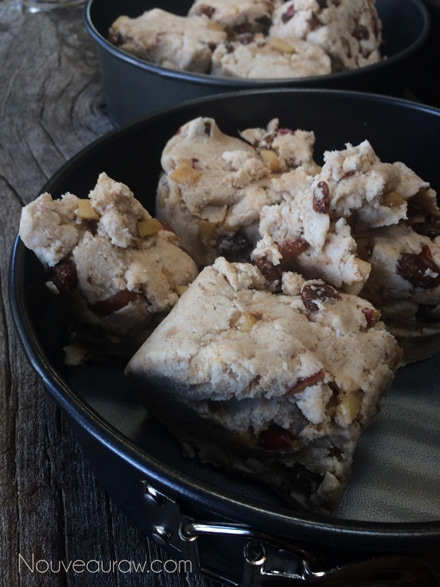
Press the batter firmly and evenly into the pans.
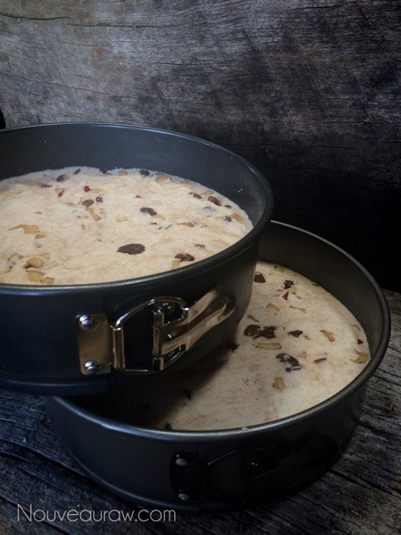
Remove the outer ring.
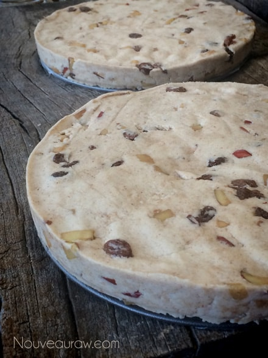
Carefully flip upside down onto the mesh sheet that comes with the dehydrator.
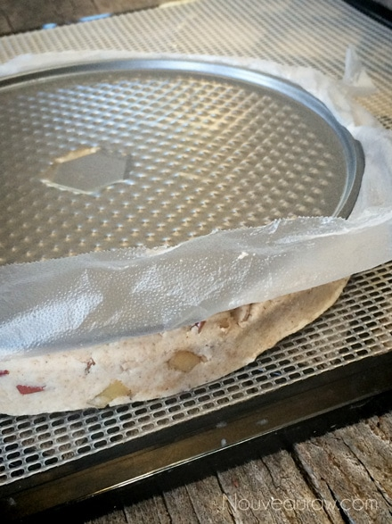
Remove the Springform pan base.
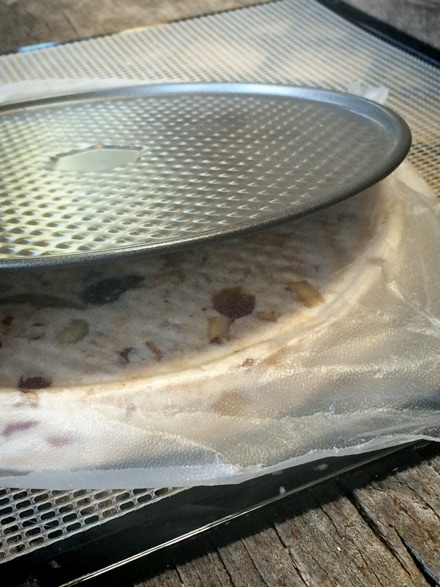
Remove the plastic wrap… now you can see how helpful the plastic wrap is.
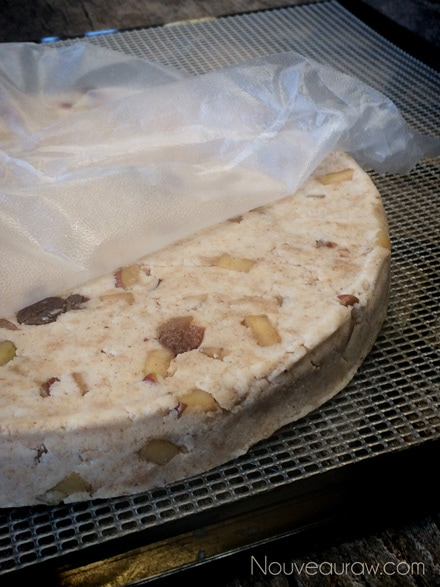
Slide in the dehydrator at 145 degrees (F) for one hour.
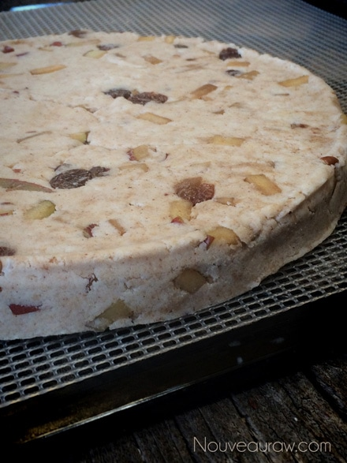
Spread a layer of frosting in between cakes.
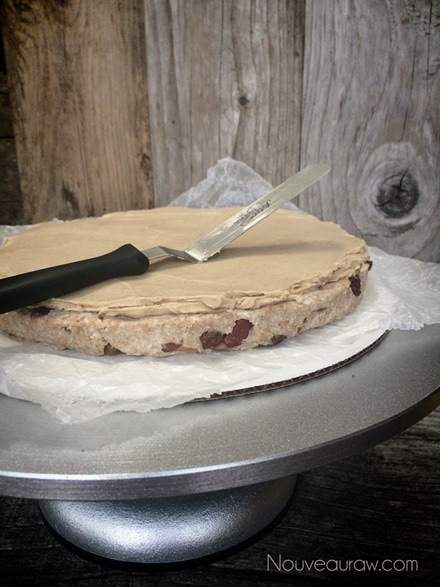
Then gently coat the outer sides and top with a thin layer of frosting.
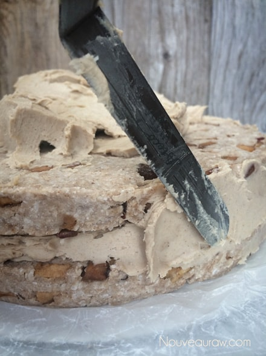
Create the pedal effect as shown below.
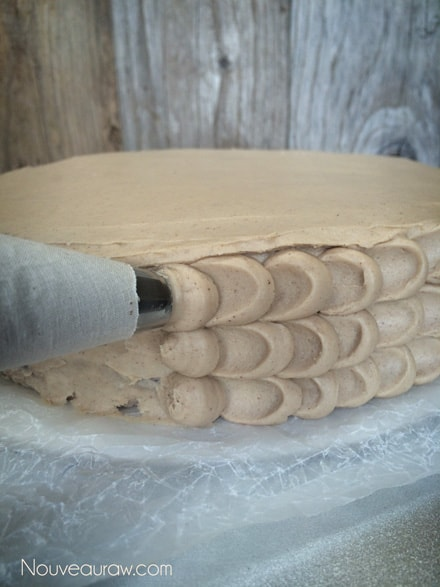
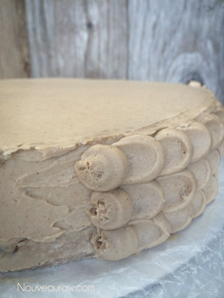
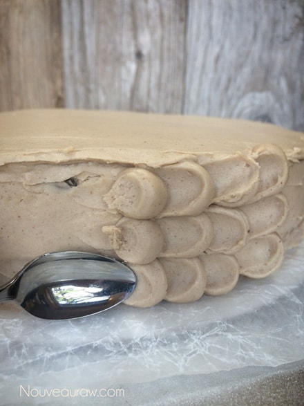
Decorate the top with the apple roses and mint leaves.

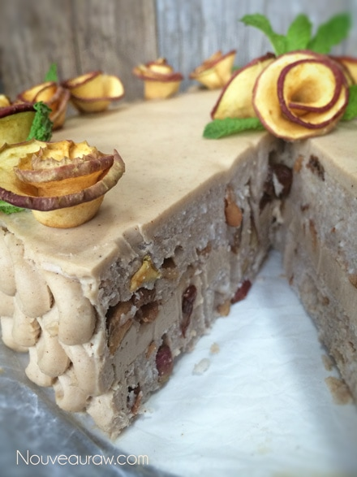
© AmieSue.com